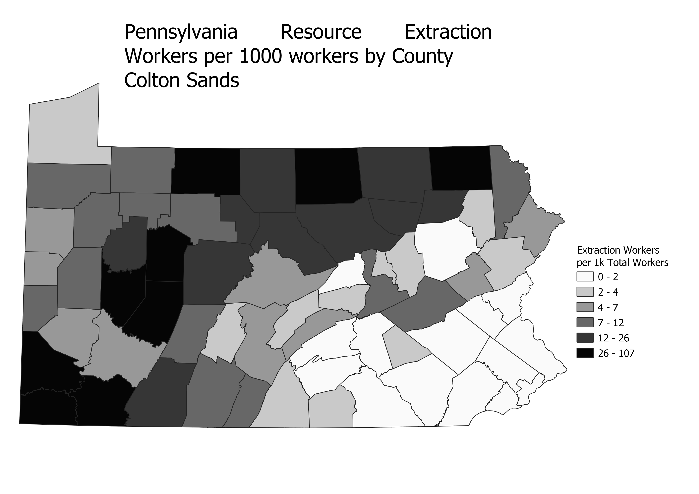
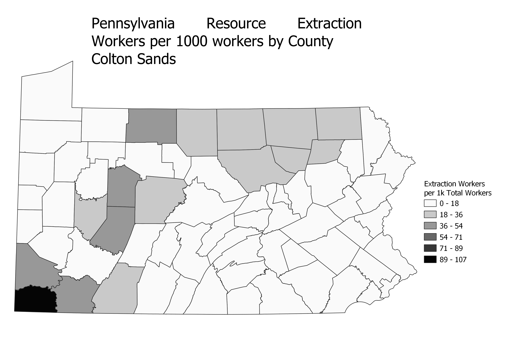
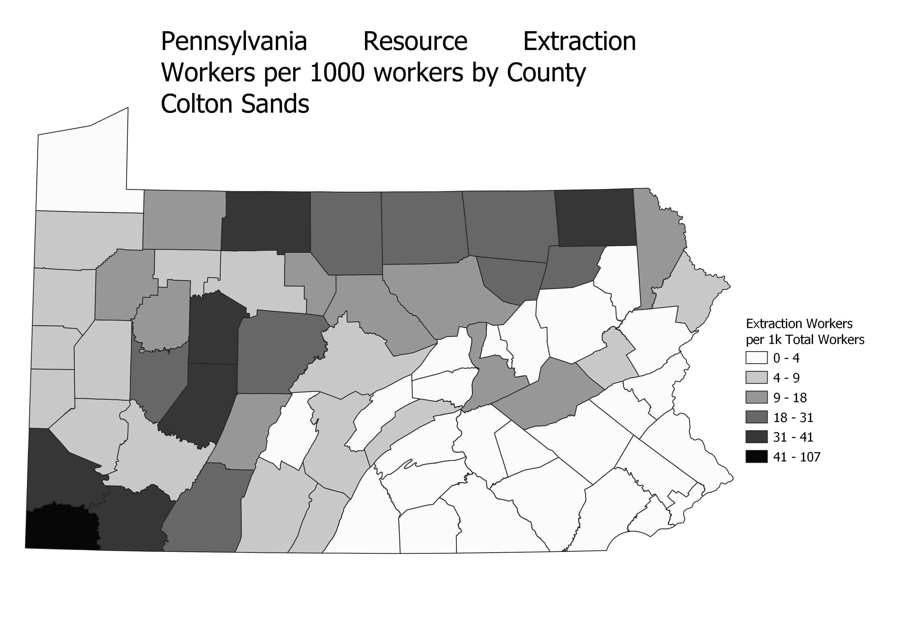

Homework 6 Part 2: Ratios and Categories
Colton Sands
This map shows a the amount of resource extraction workers per 1000 workers in each county. To create this ratio I used the field calculator, dividing the number of extraction workers by the number of total workers and then multiplying by 1000. I wanted to create this map to see how resource extraction was more important economically in certain counties.
Equal Counts:Equal counts seperates the data into categories that all contain an equal number of counties. This is good because it shows us which counties are below average, which have an average amount, and which have more than an average amount of extraction workers per 1000. It is not as good at showing outliers, as it lumps together counties with very different amounts of workers.

Equal Interval:Equal Interval divided the data up with even cuts. It is good as it shows the proportianal differnces in values, so a county with a lot of extraction workers will look very differnt than one with few extraction workers. It is not as good at finding small differnces in data. For example, in the map below many counties look like they have no extraction workers, because the outliers make the intervals too large to show differnces between the counties with less.

Natural Breaks:Natural breaks attempts to divide the data into groups by looking at the histogram created and finding breaks in the data. It does not do as good of job as equal interval at showing true proprtional differnces but it does the best at making sure the map shown finds a balance between representing outliers well and still showing differnces in the smaller values.

Data used for this project
Link to cleaned CSV dataset
Link to geoJSON